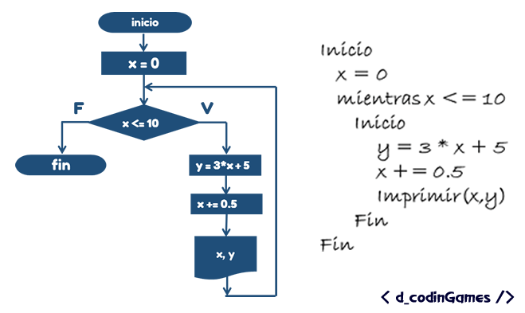

Los ciclos while son también una estructura cíclica, que nos permite ejecutar una o varias líneas
de código de manera repetitiva sin necesidad de tener un valor inicial

Ejemplo ciclo while
el ejemplo del ciclo while es una recopilación del 1 al 10: